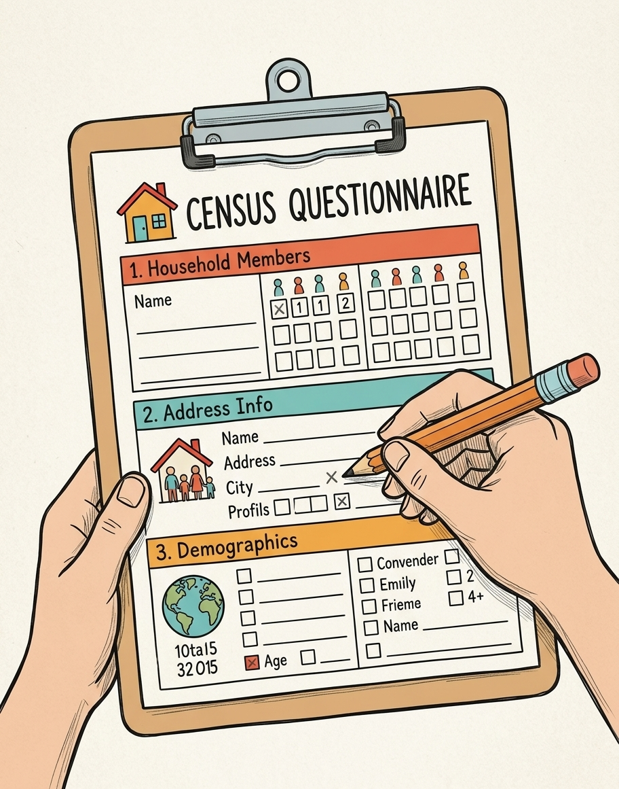
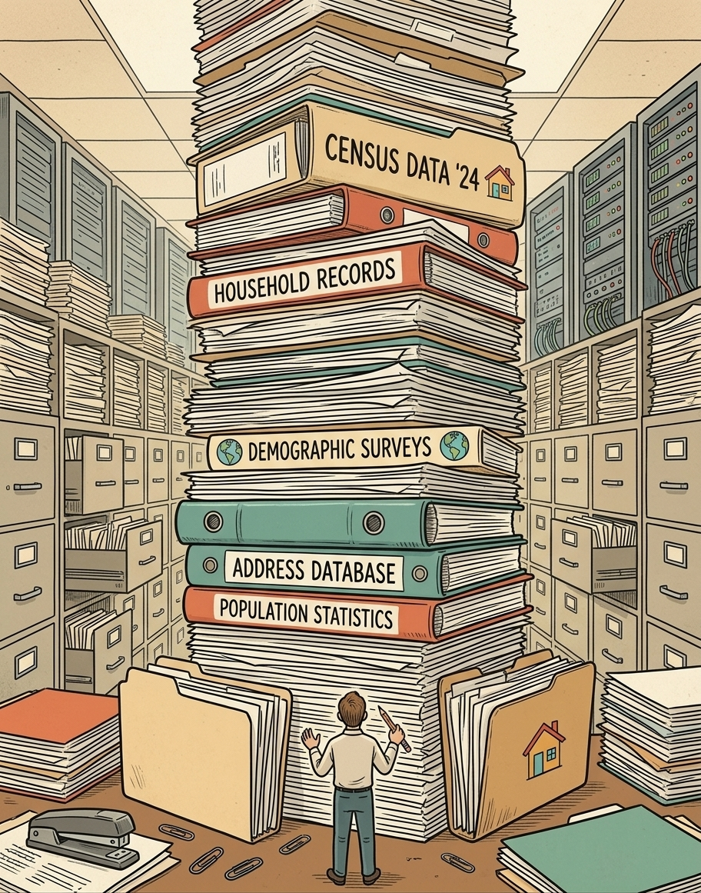
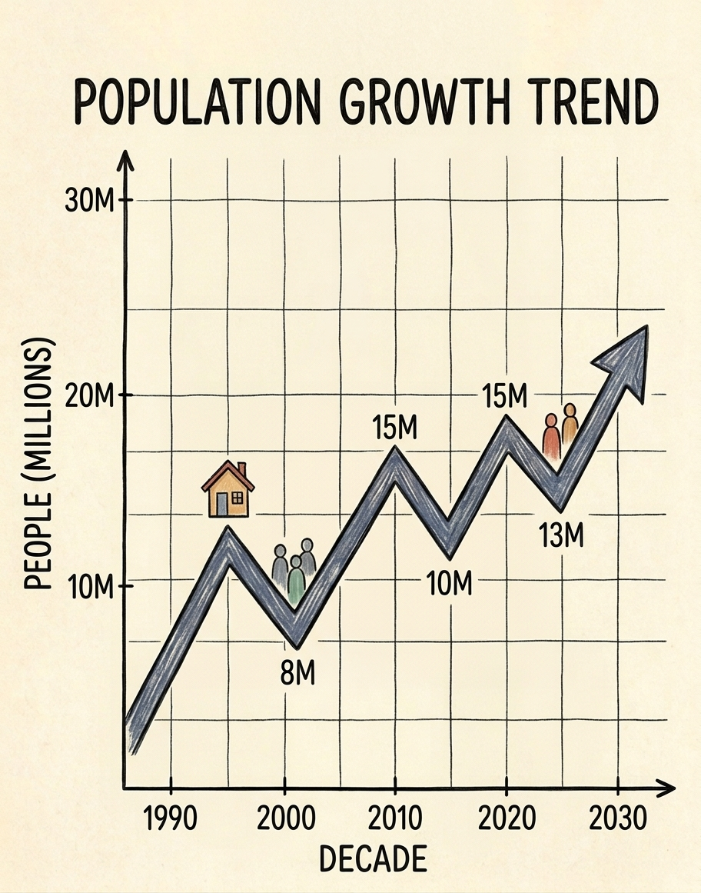
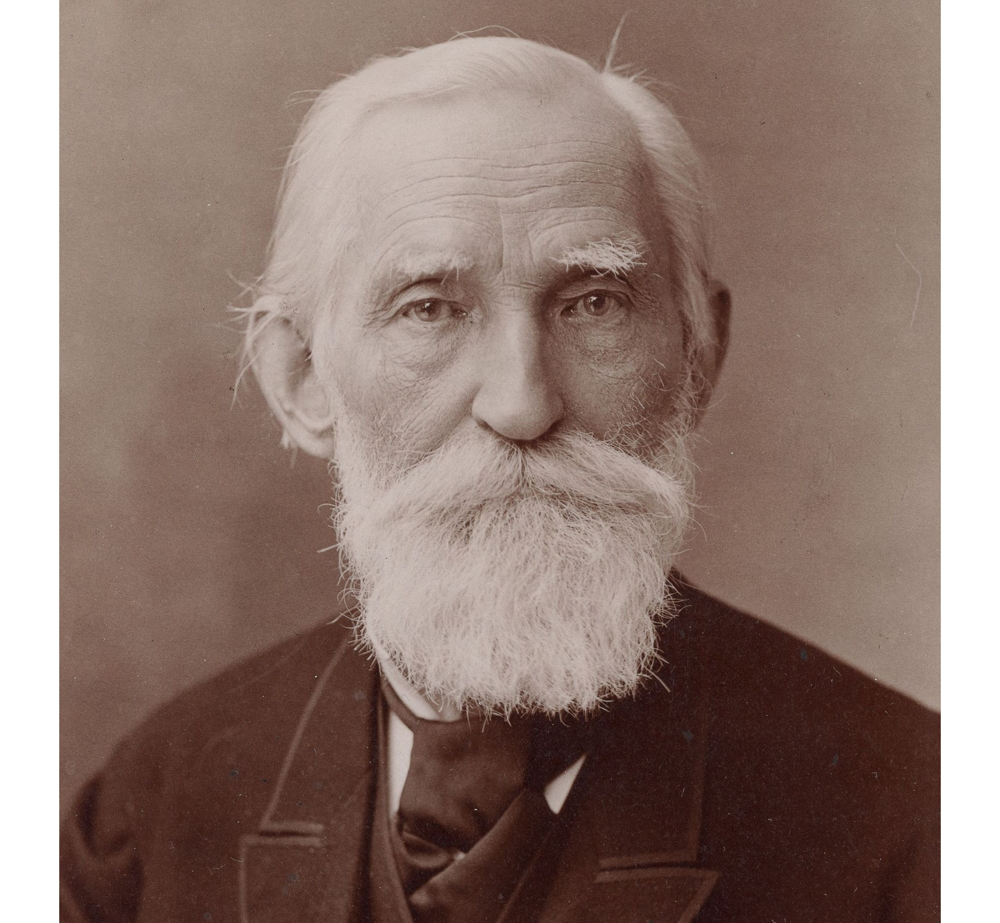
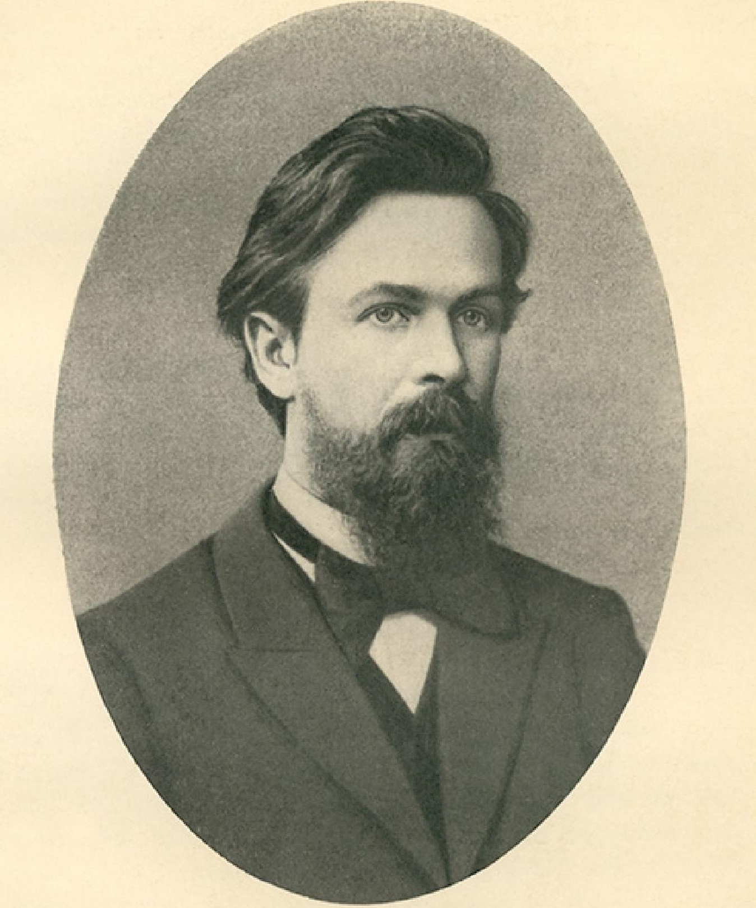

Statistics for Pharmacists
Week 1 · Reasoning with data under uncertainty
Graduate Pharmaceutical Studies
Reasoning with data under uncertainty
Week 1
Introduction to statistics.
Would you approve this drug?
First decision
New drug · response
72%
Standard treatment · response
65%
Approve?
Suppose there were only 8 patients in each group.
Now suppose there were 8,000 patients in each group.
The percentages did not change. The evidence did.
So what is statistics?
A working definition for this course
DATA
→
UNCERTAINTY
→
LEARNING
→
DECISION
Statistics is the science of learning from data in the presence of uncertainty.
This course is not about memorizing a catalogue of tests. It is about learning how to ask what the data can — and cannot — tell us.
Jacob Bernoulli
Carl Friedrich Gauss

Ronald Aylmer Fisher

Where did statistics come from?
A 60-second historical aside
When states began systematically collecting information, data became a source of power.
01
Population & resources
02
Census & records

03
Store & summarize

04
Compare & detect patterns

05
Decide & govern
The word statistics historically comes from German Statistik: knowledge about the affairs of a state.
Statistics is already in your life
Before pharmacy, before research
Income
Mean or median — and why does the choice matter?
A health headline
“A study found…” — in how many people, and compared with what?
Insurance
What risk are you transferring, and what are you paying for it?
Relative risk
“50% higher risk” — 50% higher than what baseline?
Statistical literacy is partly the ability to ask the missing question.
When bad statistics has consequences
Case study · Sally Clark
A figure presented in court for the probability of a sudden infant death in a family like Clark’s was approximately
\[P(\text{one SIDS death}) \approx \frac{1}{8543}\]
The probability of two deaths was then presented by multiplying the number by itself:
\[\frac{1}{8543}\times\frac{1}{8543}\approx\frac{1}{73\,000\,000}\]
What assumption is hiding inside that multiplication?
Do not solve this yet — we return to it after independence.
Science needs statistics
Same nominal condition ≠ same observed outcome
Give the same treatment under the same nominal conditions. Why are the measured responses not identical?
underlying target / model
measured response →
Biological variability
Measurement error
Environment
Unknown factors
Scientific observations contain both signal and uncertainty.
The scientific learning loop
Reasoning under uncertainty is iterative
1Question
→
2Experiment
→
3Data
→
4Model
→
5Decision
Decision → new question → new data
Statistics sits inside the loop: it connects uncertain observations to defensible decisions.
Enzyme engineering as a learning loop
Pharmacy-adjacent example
PET
Problem
Natural enzymes degrade PET too slowly.
→
MUT
Generate variants
Mutate enzyme sequence.
→
ASSAY
Observe
Measure activity for many variants.
→
TOP 5%
Select
Keep the best performers.
enzyme variant rank →
enzyme efficacy →
Observe → select → update → repeat.
Probability
Part II
The mathematical language of uncertainty
We now formalize the word “possible.”
Experiment → outcomes → events → probability
Start with one clinical experiment
Experiment
Administer treatment
Possible outcomes
Response No response
Event
\(A = \{\text{response}\}\)
Probability
\(\mathbb{P}(A) = 0.70\)
Probability is a rule for assigning numbers to events before the uncertain outcome is observed.
A probability space
The ingredients
\(\Omega\)
Sample space
all possible elementary outcomes
\(\mathcal{F}\)
Events
questions we can ask about outcomes
\(\mathbb{P}\)
Probability measure
a rule assigning probabilities to events
\[ \mathbb{P}:\mathcal{F} \rightarrow [0,1] \]
The sample space
Coin tosses: a clean toy model
One toss
\(\Omega = \{\text{H},\text{T}\}\)
H
T
Two tosses
\(\Omega = \{\text{HH},\text{HT},\text{TH},\text{TT}\}\)
H→HH
H→HT
T→TH
T→TT
For the first example, avoid adding “impossible” outcomes. Start with the outcomes the experiment actually defines.
Events are sets
Set-theoretic relations, made visible
HH
HT
TH
TT
\(A = \{\text{at least one head}\}\)
\(A = \{\text{HH},\text{HT},\text{TH}\}\)
\(A^c = \{\text{TT}\}\)
A
B
union, intersection, complement are operations on events
Three rules are enough to start
Kolmogorov axioms, introductory version
1 \(0 \leq \mathbb{P}(A) \leq 1\)
2 \(\mathbb{P}(\Omega)=1\)
3 If \(A\) and \(B\) are disjoint: \(\mathbb{P}(A\cup B)=\mathbb{P}(A)+\mathbb{P}(B)\)

Pafnuty Chebyshev

Andrey Markov
Andrey Kolmogorov
0
1
The full axiom is countable additivity; today, the finite version is enough for intuition.
Frequentist View
Relative Frequency: The long-run proportion of times an event \(A\) occurs over infinitely repeated trials.
Bayesian / Propensity View
Degree of Belief: The quantifiable certainty or intrinsic propensity of event \(A\) occurring given current evidence.
Useful rules follow automatically
From axioms to working tools
Complement
\(\mathbb{P}(A^c)=1-\mathbb{P}(A)\)
AAᶜ
Union
\(\mathbb{P}(A\cup B)=\mathbb{P}(A)+\mathbb{P}(B)-\mathbb{P}(A\cap B)\)
A
+
B
=
A
B
×2
Double-counted intersection \(A \cap B\)
Most probability formulas are bookkeeping: which regions have we counted once, twice, or not at all?
Conditional probability changes the universe
Subgroups and new information
Responders among all patients: \(\mathbb{P}({\color{#1f6feb}A})\)
Responders among female subgroup: \(\mathbb{P}({\color{#1f6feb}A} \mid {\color{#c65d09}B})\)
\(\mathbb{P}({\color{#1f6feb}A} \mid {\color{#c65d09}B}) = \frac{\mathbb{P}({\color{#7b4ab5}A \cap B})}{\mathbb{P}({\color{#c65d09}B})}\)
Conditional probability changes the universe we are considering.
Independence is a scientific assumption
When learning B tells us nothing about A
Independent
\(\mathbb{P}(A\mid B)=\mathbb{P}(A)\)
\(\mathbb{P}(A\cap B)=\mathbb{P}(A)\cdot\mathbb{P}(B)\)
Knowing \(B\) does not change the probability of \(A\).
Dependent
Adverse effect
and
renal impairment
and
renal impairment
Knowing \(B\) may strongly change the probability of \(A\).
Multiplication is only justified after the independence assumption is justified.
Return to the court case
The hidden assumption
\[ \frac{1}{8543}\times\frac{1}{8543} \]
This multiplication assumes independence.
Siblings may share genetic and environmental risk factors.
The calculation also confused:
\[\mathbb{P}(\text{evidence} \mid \text{hypothesis})\]
with:
\[\mathbb{P}(\text{hypothesis} \mid \text{evidence})\]
Independence is not a default setting. It is a claim about how the world works.
Total probability: divide and rebuild
A population can be built from subgroups
\(B\)
\(B^c\)
\(A^c \cap B\)
\(A \cap B\)
\(A^c \cap B^c\)
\(A \cap B^c\)
\[ \mathbb{P}(A) = \mathbb{P}(A\mid B)\cdot\mathbb{P}(B) + \mathbb{P}(A\mid B^c)\cdot\mathbb{P}(B^c) \]
Calculate within simpler subgroups, then combine them according to subgroup size.
The direction matters
A common diagnostic mistake
Test performance
\(\mathbb{P}(+\mid\text{Disease})\)
≠
Patient question
\(\mathbb{P}(\text{Disease}\mid +)\)
Not the same question.
A diagnostic-test puzzle
Try to guess before calculating
Prevalence
1% disease in population
Sensitivity
90% correctly identified sick people
Specificity
95% correctly identified healthy people
Someone tests positive. What is the probability that the person actually has the disease?
Commit to a number before the next slide.
Count people, not abstract probabilities
Natural frequencies make Bayes intuitive
Start with
1000 people
Disease
10990 without disease
True positives
9
False positives
50
\[ \mathbb{P}(\text{Disease}\mid +) \approx \frac{9}{9+50}\approx 15\% \]
Bayes’ theorem
The formula compresses the counting logic
\[ \mathbb{P}(D\mid +)=\frac{\mathbb{P}(+\mid D)\cdot \mathbb{P}(D)}{\mathbb{P}(+)} \]
\[ \mathbb{P}(+)=\mathbb{P}(+\mid D)\cdot \mathbb{P}(D)+\mathbb{P}(+\mid D^c)\cdot \mathbb{P}(D^c) \]
prior
How common is disease?
How common is disease?
evidence model
How does the test behave?
How does the test behave?
posterior
What should we believe after observing \(+\)?
What should we believe after observing \(+\)?
Bayes’ theorem is a mathematical model for updating probabilities when new evidence arrives.
Bayes laboratory
Interactive slide for students at home
Move the sliders. Watch what happens when the disease becomes rare or specificity improves.
bayesCalc = {
const N = 1000;
const diseased = N * prev / 100;
const healthy = N - diseased;
const tp = diseased * sens / 100;
const fp = healthy * (100 - spec) / 100;
const ppv = tp / (tp + fp);
const widthTP = 100 * tp / Math.max(tp + fp, 1);
const widthFP = 100 - widthTP;
return html`<div class="bayes-widget">
<div class="bayes-output-grid">
<div class="bayes-output"><span>Disease</span><strong>${diseased.toFixed(1)}</strong><small>per 1000</small></div>
<div class="bayes-output"><span>True +</span><strong>${tp.toFixed(1)}</strong><small>per 1000</small></div>
<div class="bayes-output"><span>False +</span><strong>${fp.toFixed(1)}</strong><small>per 1000</small></div>
<div class="bayes-output"><span>P(Disease | +)</span><strong>${(100 * ppv).toFixed(1)}%</strong><small>positive predictive value</small></div>
</div>
<div class="positive-bar">
<div class="tp" style="width:${widthTP}%">true positives</div>
<div class="fp" style="width:${widthFP}%">false positives</div>
</div>
</div>`
}How many ways?
Counting supports probability
Before choosing a formula, answer two design questions.
Without replacement
With replacement
Permutation
Arrangement of objects (Order matters)
Arrangement of objects (Order matters)
\(\displaystyle n!\)
\(\displaystyle \frac{n!}{k_1!k_2!\cdots k_r!}\)
Combination
Selection of objects (Order does not matter)
Selection of objects (Order does not matter)
\(\displaystyle {n\choose k}\)
\(\displaystyle {n+k-1\choose k}\)
Variation
Arrangement of selected objects (Order matters)
Arrangement of selected objects (Order matters)
\(\displaystyle \frac{n!}{(n-k)!}\)
\(\displaystyle n^k\)
Discrete probability by counting
Guided exercise
Bag: 5 white balls + 8 red balls
One draw: probability of red?
\(\mathbb{P}(\text{red})=\frac{8}{13}\)
Two draws without replacement: both red?
\(\frac{8}{13}\cdot\frac{7}{12}=\frac{\binom82}{\binom{13}2}\)
Continuous probability as geometry
A probability without counting objects
Choose two random real numbers \(X,Y\in[0,1]\). What is \(\mathbb{P}(X+Y<1)\)?
\[
X,Y\sim \mathcal{U}(0,1)
\]
x
y
\(x+y<1\)
\[ \mathbb{P}(X+Y<1)=\frac{\text{area of triangle}}{\text{area of square}}=\frac12 \]
Try it: simulation meets geometry
Interactive slide for students at home
Increase the number of random points. The empirical proportion should drift toward \(1/2\).
mcPlot = {
const pts = Array.from({length: mc_n}, () => ({x: Math.random(), y: Math.random()}));
const hits = pts.filter(d => d.x + d.y < 1).length;
const ratio = (hits / mc_n).toFixed(3);
const circles = pts.map(d => {
const cls = d.x + d.y < 1 ? "hit" : "miss";
return `<circle class="${cls}" cx="${d.x*100}" cy="${100-d.y*100}" r="1.15" />`;
}).join("");
return html`<div class="mc-widget">
<svg viewBox="0 0 100 100" role="img" aria-label="Monte Carlo points in unit square">
<polygon points="0,100 0,0 100,100" class="mc-triangle"></polygon>
<line x1="0" y1="0" x2="100" y2="100" class="mc-diagonal"></line>
${circles}
</svg>
<div class="mc-result">
${tex`\hat{\mathbb{P}} = \frac{${hits}}{${mc_n}} =${ratio}`}
</div>
</div>`;
}
Statistical Concept: Continuous Uniform Randomness
A true uniform random variable \(X \sim \mathcal{U}(0,1)\) guarantees that every numerical value in \([0,1]\) has an equal probability of being selected.
True Randomness
- Generated by physical processes (e.g., thermal noise, radioactive decay)
- Completely unpredictable with zero repeating patterns
Pseudo-Randomness
- Generated by deterministic algorithms (by computer)
- Practically indistinguishable from true random
What did we really learn?
Week 1 synthesis
Probability is a mathematical language for uncertainty.
\(\mathbb{P}(A\mid B)\neq \mathbb{P}(B\mid A)\)
Independence is an assumption about the world — not permission to multiply numbers.
If probability describes uncertain processes, how can data teach us which probabilities or models are plausible?
Next: probability distributions — the shapes uncertainty can take.
Statistics 101 · Week 1